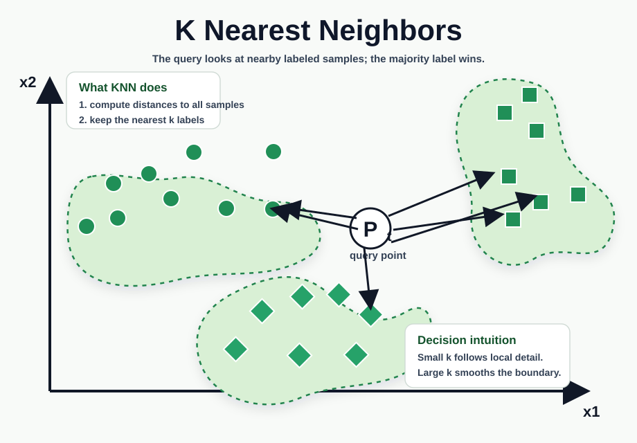
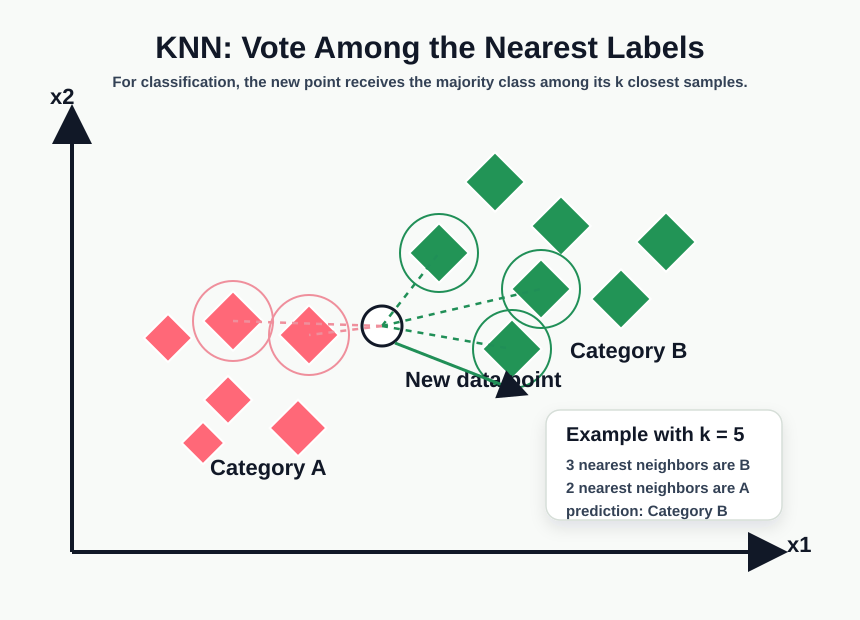

🧮 KNNK-近邻
🟧 KNN — K-Nearest Neighbors
1. Concept Understanding
KNN is a memory-based, supervised, non-parametric learning algorithm. There is no parameter fitting at training time — the algorithm just stores the entire training set. At prediction time it looks up the $k$ training points closest to the query and aggregates their labels.
Two prediction rules, depending on the task:
- Classification. 1-NN assigns the test point $x$ the label of its single closest training sample (the induced decision boundary is the Voronoi tessellation). $k$-NN takes a majority vote over the $k$ nearest neighbors. As a probability statement: $p(y=c\mid x, \mathcal{D})=\tfrac{1}{k}\sum_{n\in \mathcal{N}_k(x)} \mathbb{I}(y_n=c)$.
- Regression. Predict the mean of the $k$ nearest neighbors' target values. A weighted variant uses $1/d(x,x_i)$ so that closer neighbors count more.
It solves "give me a fast, transparent baseline that needs no model assumptions." Because all the work happens at query time, KNN is also called a lazy learner.
2. Plain-English Explanation
Imagine you've moved to a new neighborhood and want to guess whether your phone will get good cellular reception at the new place. The simplest possible strategy: ask your $k$ closest neighbors, and go with whatever most of them say. That's literally KNN classification — and it works because cellular signal really does depend on location, so nearby neighbors are informative about you.
For regression, replace "vote" with "average" — instead of asking "good or bad?", ask "how many bars do you usually get?" and report the mean of their answers.
The catch is that "closest" depends entirely on which ruler you use. If you measure distance in feet, the neighbor across the street wins; if you measure it in number of intervening trees, a different neighbor wins. So picking the right distance metric — and putting all the features on a comparable scale — is the whole game.


3. Core Intuition
Nearby points carry similar labels. If the underlying function $y=f(x)$ is reasonably smooth and the training set is dense, a query point's neighbors will share its label / target almost everywhere. KNN bets on exactly that smoothness.
Lazy learning has no bias. Because there's no model class to fit into, KNN can carve out arbitrarily complex decision regions — there is no "linear assumption" to violate. The Voronoi diagram of 1-NN is a piecewise-linear partition built directly from the data.
It pays the price at inference. Predict-time cost is $O(nd)$ per query (compute distance to every training point), and you must keep the entire training set in memory. Training cost is technically zero, but search structures like kd-tree or locality-sensitive hashing (LSH) are needed to make it tractable on large datasets.
Bayes-error connection. As $n\to\infty$, the asymptotic error of 1-NN is at most twice the Bayes error (the optimal classifier's error). That's a striking guarantee for an algorithm that does no training.
$k$ controls the bias / variance trade-off. $k=1$ has zero training error and a jagged boundary (high variance, overfits noise); large $k$ smooths the boundary (high bias, may underfit). Pick $k$ by cross-validation.
4. Key Equations
What it does. "What fraction of my $k$ neighbors are class $c$?" — pick the class with the highest fraction. Ties on $\arg\max$ are broken by problem-specific rules (random pick, smaller class, smaller distance sum).
What it does. "Predict the average target value seen near $x$." Local averaging — works whenever the target is roughly smooth in feature space.
What it does. Straight-line ruler distance in $d$-dimensional feature space. The squaring inside the sum amplifies large per-feature gaps, which is exactly why feature scale dominates everything.
5. Worked Examples
Dataset $\mathcal{D}=\{(x^{(i)}, y^{(i)})\}_{i=1}^{7}$ in $\mathbb{R}^3$. Query $q=(3,2,4)$. Compute Euclidean distances and predict the label for $k=1$ and $k=3$ (break ties arbitrarily).
Three of the seven points (the rest follow the same pattern):
- $x^{(4)}=(4,3,2),\ y^{(4)}=1$
- $x^{(5)}=(3,2,2),\ y^{(5)}=2$
- $x^{(7)}=(2,0,2),\ y^{(7)}=1$
Step 1 — Euclidean distances.
Step 2 — sort & pick neighbors. The single nearest is $x^{(5)}$ (distance $2$). The three nearest are $\{x^{(5)}, x^{(4)}, x^{(7)}\}$ with labels $\{2,1,1\}$.
Step 3 — predict.
- $k=1$: return $y^{(5)}=\mathbf{2}$.
- $k=3$: majority of $\{2,1,1\}$ is $\mathbf{1}$.
The whole exam template is exactly these three steps — distances, sort, vote.
Let $X_1,\dots,X_n,q\stackrel{\text{iid}}{\sim}\mathrm{Unif}([0,1]^d)$. Per coordinate, $\mathbb{E}(X_{ij}-q_j)^2=\tfrac16$, so $\mathbb{E}\|X_i-q\|^2=d/6$. Variance is $O(d)$, so by Chebyshev the relative spread $\sqrt{\mathrm{Var}}/\mathbb{E}\to 0$ as $d\to\infty$. All neighbor distances concentrate around the same value — and the ratio $R_{(1)}/R_{(n)}$ of nearest to farthest neighbor distance approaches $1$. "Nearest" stops carrying information.
Same $k=3$ neighborhood with neighbor outputs $\{2, 1, 1\}$.
- Classification (treating $\{1,2\}$ as discrete labels): mode is $1$ → predict $\hat y=1$.
- Regression (treating them as real-valued targets): mean is $(2+1+1)/3=4/3$ → predict $\hat y\approx 1.33$.
- Inverse-distance weighted regression with weights $w=(1/2, 1/\sqrt6, 1/3)$: $\hat y=\sum w_iy_i/\sum w_i\approx 1.32$.
Same $k$, same neighbors — the prediction rule changes everything.
6. Problem-Solving Tips
- Build the distance table first. One row per training point, one column per feature, plus a final $\|\cdot\|_2$ column. Sort it once and read off the top-$k$.
- Know your label convention. Discrete labels → vote. Real-valued targets → average.
- Always standardize before computing distances (subtract the per-feature mean, divide by std). If the problem doesn't say to, mention you would normally do it.
- Tie handling. Even-$k$ binary classification and equal-distance ties happen; obey whatever rule the problem gives ("break arbitrarily," "smaller index wins," etc.).
- Pick $k$ by cross-validation; in conceptual questions explain the bias-variance trade-off ($k\!\uparrow$: smoother + higher bias; $k\!\downarrow$: jagged + higher variance). For classification, odd $k$ often avoids ties; elbow plots are a quick visual check of where validation error flattens.
- For high-dim arguments, invoke distance concentration (Example 2) and conclude "nearest-neighbor relations become unreliable."
7. Common Mistakes
- Forgetting to standardize features → a single high-magnitude feature dominates every distance.
- Using the squared distance $\|x-x_i\|_2^2$ when the question asks for $\|x-x_i\|_2$ — the ranking is the same, but reported distances differ.
- Calling KNN "linear" or "parametric." It is non-linear and non-parametric; complexity grows with $n$.
- Confusing KNN with k-means. KNN is supervised and remembers labeled training points; k-means is unsupervised and learns $K$ centroids.
- Reporting "no training cost" as if KNN were free — the prediction cost is $O(nd)$ per query and you must store all of $\mathcal{D}$.
- Assuming small $k$ is always better. $k=1$ memorizes noise; very small $k$ has high variance.
- Believing KNN works fine in high dimensions — it doesn't, because of distance concentration.
- Treating KNN regression with $k=1$ as a serious choice — the prediction inherits whatever noise was on the single nearest target.
8. Exam Focus
- Numerical KNN by hand: build the distance table, sort, take the top $k$, vote (or average).
- State the three properties: supervised, non-parametric, non-linear decision boundary.
- Name the two scaling failure modes: feature-scale dominance (fix with standardization) and curse of dimensionality / distance concentration (no fix — switch methods or reduce dimension).
- Cite the asymptotic guarantee: 1-NN error $\le 2\times$ Bayes error as $n\to\infty$.
- Explain how $k$ controls bias / variance and the role of the Voronoi tessellation at $k=1$.
- Know practical $k$ selection: validation / cross-validation first, elbow plot as a visual diagnostic, odd $k$ for fewer classification ties.
- Be ready to compare classification vs regression: discrete vote vs continuous average; same neighbor lookup, different aggregation.
9. Quick Checklist
Last-minute recall
- Lazy learner: zero training cost, $O(nd)$ per query, store all of $\mathcal{D}$.
- Classification: $\arg\max_c \tfrac{1}{k}\sum_{n\in\mathcal{N}_k}\mathbb{I}(y_n=c)$. Regression: $\tfrac{1}{k}\sum y_i$ (or inverse-distance weighted).
- Distance: $\|x-x_i\|_2=\sqrt{\sum_j (x_j-x_{ij})^2}$. Standardize features first.
- $k=1$ ⇒ zero training error, jagged Voronoi boundary, high variance.
- $k\uparrow$ ⇒ smoother boundary, higher bias.
- Choose $k$ with validation / cross-validation; odd $k$ helps avoid classification ties.
- 1-NN asymptotic error $\le 2\,\epsilon^*_{\text{Bayes}}$.
- Curse of dimensionality: nearest / farthest distance ratio $\to 1$ as $d\to\infty$.
- Speedups: kd-tree (low-d), LSH (high-d).
Bonus · Classification vs Regression at a glance
| Aspect | KNN Classification | KNN Regression |
|---|---|---|
| Output type | Discrete label | Continuous value |
| Aggregation | Majority vote over $k$ neighbors | Mean (or inverse-distance weighted) over $k$ neighbors |
| $k=1$ behavior | Zero training error; Voronoi-tessellation boundary | Echoes one noisy target; rarely a good choice |
| Distance metric | Usually $L_2$ (after standardization) | Usually $L_2$ (after standardization) |
| Decision surface | Piecewise nonlinear (Voronoi-like) | Locally constant (step function) |
| Complexity vs $k$ | Higher when $k$ is small (model more flexible) | Higher when $k$ is small (model more flexible) |
🟧 KNN · K-近邻算法
1. 概念理解
KNN 是一种 memory-based 的 supervised、non-parametric 学习算法。训练时不拟合任何参数 —— 算法只是把整个训练集存下来；预测时查找离 query 最近的 $k$ 个训练样本，并对它们的标签做聚合。
两种预测规则，按任务区分：
- 分类 / Classification. 1-NN 把测试点 $x$ 直接赋成最近邻的标签（诱导出的 decision boundary 称为 Voronoi tessellation）。$k$-NN 在前 $k$ 个最近邻里 majority vote。写成概率形式：$p(y=c\mid x, \mathcal{D})=\tfrac{1}{k}\sum_{n\in\mathcal{N}_k(x)} \mathbb{I}(y_n=c)$。
- 回归 / Regression. 预测最近 $k$ 个邻居的目标值的 mean。加权变体用 $1/d(x,x_i)$，让更近的邻居权重更大。
它解决的问题是 "给我一个无需模型假设、解释力强的快速 baseline"。因为所有计算都发生在 query 时，KNN 又称为 lazy learner。
2. 大白话理解
想象你刚搬到一个新小区，想猜自家这个位置的手机蜂窝信号好不好。最朴素的策略：问 $k$ 个最近的邻居，按多数人的回答下结论 —— 这就是 KNN classification 的字面写照。之所以靠谱，是因为蜂窝信号真的和地理位置强相关，离得近的邻居确实能给你提供信息。
回归就把 "投票" 换成 "平均" —— 不再问 "好 / 坏"，而是问 "你这里平时是几格信号"，把他们的回答平均一下作为自己的预测。
关键点：所谓 "最近" 完全取决于你用什么尺子。用 "英尺" 量是马路对面那家，用 "中间隔了多少棵树" 量又会换人。所以选对距离度量、把所有 feature 放到可比的 scale —— 才是 KNN 的全部诀窍。
3. 核心直觉
近邻点带相似标签. 如果真函数 $y=f(x)$ 足够光滑、训练集足够稠密，那么 query 的邻居在绝大多数地方会与它共享标签 / 目标值。KNN 押注的就是这条 smoothness 假设。
Lazy learning 没有 model bias. 不存在要被违反的 "linear assumption"，KNN 可以切出任意复杂的 decision region。1-NN 的 Voronoi 图就是直接由数据切出来的 piecewise-linear 划分。
代价在 inference. 每个 query 要 $O(nd)$（对每个训练点都算距离），且必须把整个训练集留在内存。"训练时间为 0" 是事实，但要在大数据集上跑通，得用 kd-tree（低维）或 locality-sensitive hashing (LSH)（高维）来加速搜索。
Bayes-error 关联. $n\to\infty$ 时 1-NN 的 asymptotic error 不超过 Bayes error 的两倍。一个完全不训练的算法能给出这种保证，已经相当惊艳。
$k$ 控制 bias / variance trade-off. $k=1$ 训练 error 为 0，边界很碎、variance 高（容易拟合 noise）；$k$ 大边界平滑、bias 高（可能 underfit）。$k$ 用 cross-validation 选。
4. 关键公式
这个公式在做什么？ "我的 $k$ 个邻居里，类别 $c$ 占多大比例？" —— 选比例最大的那个类别。$\arg\max$ 出现 tie 时按题目规则（随机选 / 选下标小的 / 距离和小的）打破。
这个公式在做什么？ "预测 $x$ 附近样本目标的平均值"。Local averaging —— 真实函数在 feature space 中近似平滑时效果好。
这个公式在做什么？ $d$ 维 feature space 里的 "直尺距离"。逐 coordinate 做平方会把大差异放大、小差异压缩，所以 feature scale 对它影响极大。
5. 例题精解
数据集 $\mathcal{D}=\{(x^{(i)}, y^{(i)})\}_{i=1}^{7}$ 在 $\mathbb{R}^3$。query $q=(3,2,4)$。算 Euclidean 距离，给出 $k=1$ 与 $k=3$ 的预测（tie 任意打破）。
七个点中的三个（其余同理）：
- $x^{(4)}=(4,3,2),\ y^{(4)}=1$
- $x^{(5)}=(3,2,2),\ y^{(5)}=2$
- $x^{(7)}=(2,0,2),\ y^{(7)}=1$
Step 1 —— 算 Euclidean 距离.
Step 2 —— 排序选邻居. 最近邻是 $x^{(5)}$（距离 $2$）。前三近邻是 $\{x^{(5)}, x^{(4)}, x^{(7)}\}$，标签为 $\{2,1,1\}$。
Step 3 —— 给出预测.
- $k=1$：返回 $y^{(5)}=\mathbf{2}$。
- $k=3$：$\{2,1,1\}$ 的多数 = $\mathbf{1}$。
整个考试模板就是这三步 —— 算距离、排序、投票。
设 $X_1,\dots,X_n,q\stackrel{\text{iid}}{\sim}\mathrm{Unif}([0,1]^d)$。逐 coordinate $\mathbb{E}(X_{ij}-q_j)^2=\tfrac16$，所以 $\mathbb{E}\|X_i-q\|^2=d/6$。Variance 为 $O(d)$，由 Chebyshev 得相对 spread $\sqrt{\mathrm{Var}}/\mathbb{E}\to 0$（$d\to\infty$）。所有邻居距离都集中到同一个值 —— 而最近 / 最远邻居距离的比 $R_{(1)}/R_{(n)}$ 趋于 $1$。"最近" 这个概念彻底失效。
同一个 $k=3$ 邻域，邻居输出 $\{2, 1, 1\}$。
- Classification（把 $\{1,2\}$ 当离散标签）：mode 为 $1$ → $\hat y=1$。
- Regression（把它们当实数目标）：mean 为 $(2+1+1)/3=4/3$ → $\hat y\approx 1.33$。
- Inverse-distance weighted regression，权重 $w=(1/2, 1/\sqrt6, 1/3)$：$\hat y=\sum w_iy_i/\sum w_i\approx 1.32$。
同样的 $k$、同样的邻居 —— 切换 prediction rule，结果完全不同。
6. 题型与解题步骤
- 先列距离表. 一行一个训练点，一列一个 feature，最后一列填 $\|\cdot\|_2$。排序一次，前 $k$ 个直接读出来。
- 分清 label 类型. 离散标签 → 投票；实数目标 → 取平均。
- 距离前永远先标准化（每个 feature 减 mean、除 std）。即便题目没要求，也要在答题时点一句 "正常会先做 standardization"。
- Tie handling. 偶数 $k$ 二分类、距离相等都会出 tie；按题目规则（"任意" / "下标小者优先" / "距离和小者优先"）即可。
- $k$ 用 cross-validation 选；概念题里要会讲 bias / variance trade-off（$k\!\uparrow$：更平滑、bias 高；$k\!\downarrow$：更碎、variance 高）。分类里常用 odd $k$ 减少 tie；elbow plot 可以快速看 validation error 什么时候开始变平。
- 高维论证 要用 distance concentration（例 2），结论是 "nearest-neighbor 关系不再可靠"。
7. 常见错误
- 忘记标准化 → 单个量级大的 feature 主导整个距离。
- 题目要 $\|x-x_i\|_2$ 时却写成 squared distance $\|x-x_i\|_2^2$ —— 排序结果一样，但报告的距离值不对。
- 把 KNN 称为 "linear" 或 "parametric"。它是 non-linear 且 non-parametric，复杂度随 $n$ 增长。
- 把 KNN 和 k-means 混淆。KNN 是 supervised，保存 labeled training points；k-means 是 unsupervised，学习 $K$ 个 centroids。
- 把 "训练成本 = 0" 当作 KNN 没代价 —— prediction 阶段每个 query $O(nd)$，且必须保留全部 $\mathcal{D}$ 在内存。
- "$k$ 越小越好" 是错的 —— $k=1$ 把噪声也背下来；$k$ 太小 variance 高。
- 认为 KNN 在高维一样能用 —— distance concentration 让它失效。
- 把 KNN regression 的 $k=1$ 当作正经选项 —— 它会把最近邻一个点的 noise 直接搬过来。
8. 考试重点
- 手算 KNN：列距离表、排序、取前 $k$、投票（或求平均）。
- 说出三条性质：supervised、non-parametric、non-linear decision boundary。
- 说出两种 scaling 失败模式：feature-scale dominance（用 standardization 解决）与 curse of dimensionality / distance concentration（无解 —— 换方法或先降维）。
- 引用 asymptotic 保证：$n\to\infty$ 时 1-NN error $\le 2\times$ Bayes error。
- 解释 $k$ 如何控制 bias / variance；$k=1$ 时 Voronoi tessellation 的角色。
- 知道 practical $k$ selection：优先 validation / cross-validation，elbow plot 辅助观察，odd $k$ 降低分类 tie。
- 能比较 classification vs regression：离散投票 vs 连续平均；找邻居一致，aggregation 不同。
9. 速记清单
最后一刻能默
- Lazy learner：训练成本 0、每 query $O(nd)$、需要存全部 $\mathcal{D}$。
- Classification：$\arg\max_c \tfrac{1}{k}\sum_{n\in\mathcal{N}_k}\mathbb{I}(y_n=c)$。Regression：$\tfrac{1}{k}\sum y_i$（或 inverse-distance 加权）。
- 距离：$\|x-x_i\|_2=\sqrt{\sum_j (x_j-x_{ij})^2}$；先标准化。
- $k=1$ ⇒ 训练 error 0，Voronoi 边界，variance 高。
- $k\uparrow$ ⇒ 边界更平滑、bias 升高。
- $k$ 用 validation / cross-validation 选；classification 里 odd $k$ 更少 tie。
- 1-NN asymptotic error $\le 2\,\epsilon^*_{\text{Bayes}}$。
- 维度灾难：$d\to\infty$ 时 nearest / farthest 距离比 $\to 1$。
- 加速：kd-tree（低维）、LSH（高维）。
附录 · Classification vs Regression 一览
| 维度 | KNN Classification | KNN Regression |
|---|---|---|
| 输出类型 | 离散标签 (discrete label) | 连续数值 (continuous value) |
| 聚合方式 | $k$ 个邻居的 majority vote | $k$ 个邻居的 mean（或 inverse-distance 加权） |
| $k=1$ 的行为 | 训练 error = 0，Voronoi tessellation 边界 | 直接复制一个 noisy target，通常不可取 |
| 距离度量 | 通常 $L_2$（先 standardize） | 通常 $L_2$（先 standardize） |
| 决策面 | 分段非线性（Voronoi-like） | 局部常数 (locally constant) 阶梯函数 |
| 复杂度 vs $k$ | $k$ 越小模型越复杂 | $k$ 越小模型越复杂 |